Crean expresiones que van más allá de los límites.
Filtros agregados
Opciones de inteligencia de tiempo
Funciones que ayudan a tablas de memoria
Tipos de datos
Numeros, Monedas, Cadenas, Fechas, Booleano, Blanco, Tabla
Conversiones
Conversión Implicita, Conversión Explicita
Operadores
Matemáticos, Lógicos, de Cadena
In, Not, And y Or
MODELO TABULAR
Está creado por tablas y componentes.
Se tiene que relacionar.
CREACIÓN DE TABLAS DINÁMICAS MULTIFUENTES
La creación de relaciones entre tablas únicamente se puede realizar cuando se tienen tablas dinámicas en excel, no se pueden realizar con hojas comunes.
SINTÁXIS DAX | DATA ANALÍSIS EXPRESSIONS
Calcular un valor más IVA de un tabla:
PRECIO+IVA:=VENTAS[Total]*1.16
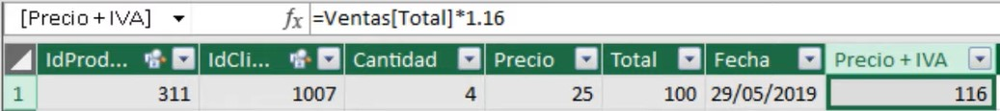
En DAX se deben usar las fórmulas de Excel en el idioma inglés. Ejemplo:
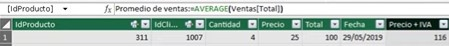
Calcular total de ventas de la tabla VENTAS:
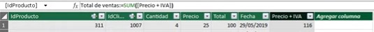
Calcular precio más bajo de un rango de la tabla PRODUCTOS:
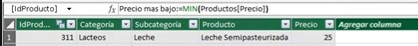
Calcular preico más alto de un rango de la tabla PRODUCTOS:
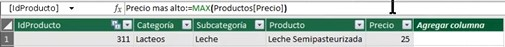
OPERADOS LÓGICOS EN POWER PIVOT
Las evaluaciones en Power Pivot se realizan a través de los operadores IF, AND y OR.
IF es una estructura de control que sirve para evaluar sentencias lógicas. Solamente
devuelve valores Booleanos, True y False.
AND únicamente devuelve True si todas las sentencias son verdaderas | TRUE.
OR únicamente devuelte False si al menos una de las sentencias es falsa | FALSE.
Calcular Ventas Altas, si el valor de la venta total es mayor a 100 y en caso contrario
mostrar Ventas Bajas:
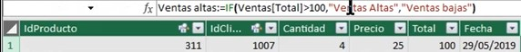
Calcular dos sentencias con AND.
Total de ventas mayor que 100.
ID producto es 310
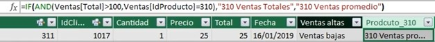
Calcular dos sentencias con OR.
Total de ventas mayor que 200.
Cantidad mayor a 3.
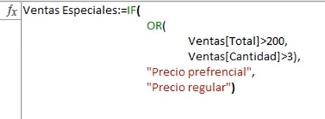
SWITCH
Crear columna calculada con cuatro criterios que otorgue los siguientes descuentos:
1 pieza sin descuento.
2 piezas 10% de descuento.
3 piezas 20% de descuento.
4 piezas 25% de descuento.
Crear columna calculada con base en el importe de la columna total que otorgue los siguientes descuentos:
Ventas menores que 100 | Sin descuento.
Ventas mayores a 100 y menores a 200 | 10% de descuento.
Ventas mayores a 200 | 25% de descuento.
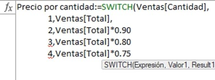
Cuando los valores no son exactos se utiliza la función switch de otra manera.
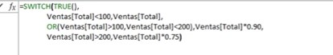
Aquí podemos Observar la fórmula por partes.
Precio por cantidad:=SWITCH | Es la sentencia de apertura de la estructura de control SWITCH.
Ventas[Total](menor que)100, Ventas[Total], | Si la venta es menor que 100 no aplica descuento.
OR Ventas[Total]>100, Ventas[Total]menor que 200, Ventas[Total]*0.90 | Aplica 10% desc.
OR Ventas[Total]>200, Ventas[Total]*0.75 | Aplica 25% desc.
FUNCIONES CONTAINS Y COUNTROWS
La función contains sirve para cubrir requerimientos contenidos en un rango específico.
¿Cuántas ventas se obtuvieron del artículo con ID 344?.
FILTER | Aplicará un filtro para solamente dejar los ID 344.
COUNTROWS | Contará cuantas filas con ID 344 filtradas existen.
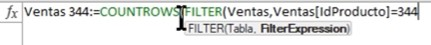
Confirmar con TRUE Y FALSE si existen ventas del producto 311.
CONTAINS | Verifica si el argumento esta dentro de un rango específico.
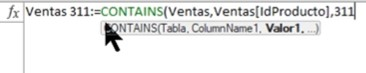
De ese producto 311.
Confirmar ventas realizadas al cliente 1007.
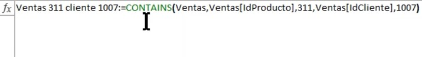
Función FIND
El argumento BLANK() sirve para que la función Find no marque error al no encontrar nada.
La función FIND es camel case, sensible a may/min.
El argumento dentro de FIND no puede hacer uso de caracteres comdín, ejemplo *ba.
*ba en otras condiciones localizaría todas las palabras que contengan las letras ba.
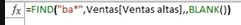
Función SEARCH
La función SEARCH no es camel case.
El argumento dentro de SEARCH puede hacer uso de caracteres comodín.
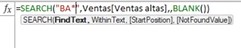
FUNCIÓN TOPN
Sirve para obtener los valores de los primeros lugares de una cantidad N, dentro de un rango de datos.
SUMX sirve para calcular la suma de valores. En el siguiente ejemplo se sumaran los valores de las primeras 5 posiciones.
TOPN | Num de top | Tabla | Columna | Órden | Columna dentro de la función SUMX
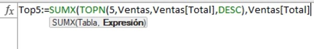
Si los valores se repiten pero se encuentran en las posiciones iniciales se sumaran
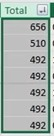
En este segundo ejemplo se sumaran las primeras 10 posiciones de un rango de datos con funciones combinadas SUMX y TOPN para sumar valores y posiciones respectivamente.
Si la función fuera estricta solamente tomaría los valores de las primeras 10 posiciones
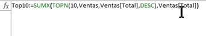
Al sumar, se incluyen los valores repetidos del último registro. Por lo que suma 11 posiciones en lugar de 10.